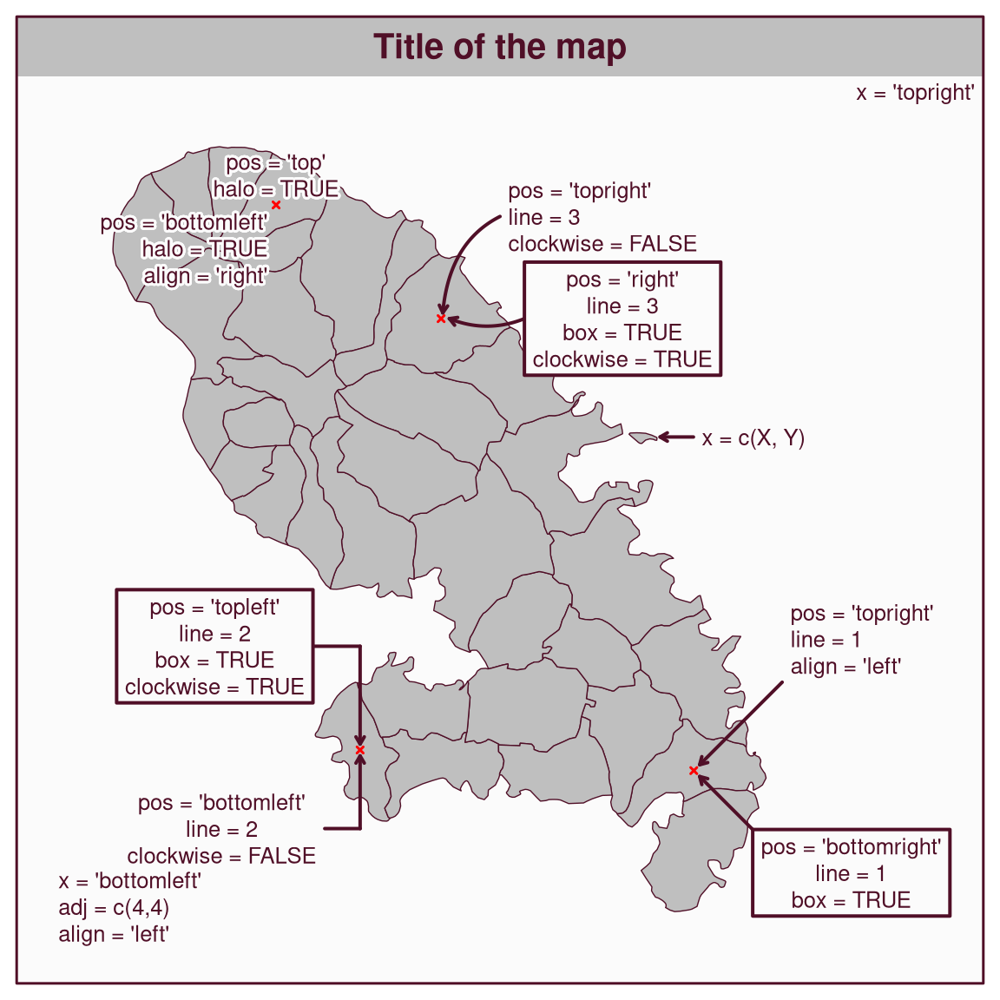

Plot a text on the map.
Usage
mf_text(
x,
txt = "Text",
cex = 0.8,
col_txt,
pos = "center",
offset = 0,
align = "center",
font = 1,
family = "sans",
halo = FALSE,
col_halo,
cex_halo = cex,
box = FALSE,
col_box,
col_box_border,
lwd_box = 2,
line = 0,
clockwise = TRUE,
lwd = 2,
col_line,
arrow = TRUE,
cex_arrow = 1,
adj = c(0, 0)
)Arguments
- x
an sf object (the first row is used), a couple of coordinates (c(x, y)), a position (one of 'topleft', 'top','topright', 'right', 'bottomright', 'bottom', 'bottomleft', 'left'), or "interactive" for interactive placement.
- txt
text to display
- cex
text size
- col_txt
text color, hex code or color name given by colors. The default color is the highlight color (see mf_theme).
- pos
position of the text relative to
x(one of 'center', 'topleft', 'top', 'topright', 'right', 'bottomright', 'bottom', 'bottomleft', 'left'). Ignored ifxis a position.- offset
offset between the text and
x. Ignored ifxis a position.- align
text alignement, one of "left", "right" or "center"
- font
text font
- family
text family
- halo
add a halo around the text
- col_halo
halo color, hex code or color name given by colors. The default color is the background color (see mf_theme).
- cex_halo
halo width
- box
add a box around the text
- col_box
box color, hex code or color name given by colors. The default color is the background color (see mf_theme).
- col_box_border
box border color, hex code or color name given by colors. The default color is the highlight color (see mf_theme).
- lwd_box
line width of the box border
- line
type of the line drawn between the text and
x. 0 for no line, 1 for a straight line, 2 for a line with an angle, 3 for a curved line. Ignored ifxis a position.- clockwise
direction of the curve for types 2 and 3
- lwd
line width
- col_line
line color, hex code or color name given by colors. The default color is the highlight color (see mf_theme).
- arrow
add an arrow to the line
- cex_arrow
arrow size
- adj
adjust the text position in x and y directions
Examples
library(mapsf)
mf_theme("base")
mtq <- mf_get_mtq()
mtq_p <- mf_get_mtq("points")
mf_map(mtq, expandBB = c(0, .1, 0, .3))
mf_map(mtq_p[c(2, 3, 17, 28), ],
pch = 4, lwd = 1.5, cex = .5, col = "red",
add = TRUE
)
mf_title("Title of the map", banner = TRUE)
mf_frame()
mf_text(x = "topright", txt = "x = 'topright'")
mf_text(
x = "bottomleft",
txt = "x = 'bottomleft'\nadj = c(4,4)\nalign = 'left'",
adj = c(4, 4),
align = "left"
)
mf_text(
x = c(728000, 1625500),
txt = "x = c(X, Y)",
pos = "right",
line = 2,
offset = 5
)
mf_text(
mtq[3, ],
txt = "pos = 'top'\nhalo = TRUE",
pos = "top",
align = "center",
halo = TRUE
)
mf_text(
mtq[3, ],
txt = "pos = 'bottomleft'\nhalo = TRUE\nalign = 'right'",
pos = "bottomleft",
align = "right",
halo = TRUE
)
mf_text(
x = mtq[17, ],
txt = "pos = 'bottomright'\nline = 1\nbox = TRUE",
pos = "bottomright",
offset = 10,
line = 1,
box = TRUE
)
mf_text(
x = mtq[17, ],
txt = "pos = 'topright'\nline = 1\nalign = 'left'",
pos = "topright",
offset = 15,
align = "left",
line = 1
)
mf_text(
x = mtq[2, ],
txt = "pos = 'topleft'\nline = 2\nbox = TRUE\nclockwise = TRUE",
pos = "topleft",
offset = 8,
clockwise = TRUE,
line = 2,
box = TRUE
)
mf_text(
x = mtq[2, ],
txt = "pos = 'bottomleft'\nline = 2\nclockwise = FALSE",
pos = "bottomleft",
offset = 6,
clockwise = FALSE,
line = 2,
box = FALSE
)
mf_text(
x = mtq[28, ],
txt = "pos = 'topright'\nline = 3\nclockwise = FALSE",
pos = "topright",
offset = 10,
clockwise = FALSE,
line = 3,
halo = TRUE,
align = "left"
)
mf_text(
x = mtq[28, ],
txt = "pos = 'right'\nline = 3\nbox = TRUE\nclockwise = TRUE",
pos = "right",
offset = 10,
clockwise = TRUE,
line = 3,
box = TRUE
)
